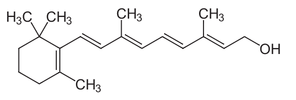
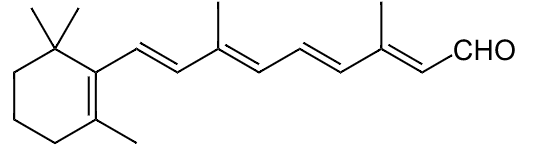
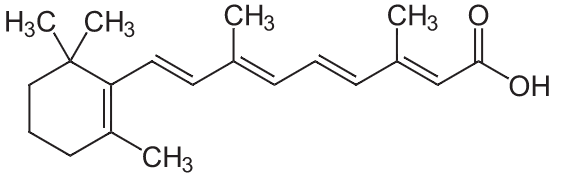
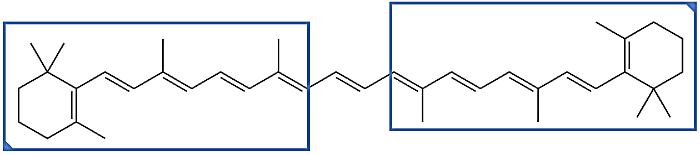

|
vitamin A |
preformed | retinoid |
retinol vitamin A1 |
all-trans-retinol |
 | 1st-generation |
an alcohol a precursor of retinoic acid the body converts retinol to retinal. then to retinoic acid, which does things we can get retinol from fish and dairy products and meat retinol v retinoic acid. (Journal of Cosmetic Dermatology, 15, 49-57) skin biopsies and retinoid treatment : 6 people + skin punch biopsies Retinol clinical efficacy testing : 41 women 35-55. full face images taken at baseline using Canfield VISIA-CR. wrinkles examined via Facial Analysis Computer Eval System (proprietary - need the algo, but probly locked) |
| vitamin A | preformed | retinoid |
retinal retinaldehyde 11-cis-retinaldehyde |
all-trans-retinal |
 | 1st-generation |
an aldehyde. a vitamin A aldehyde can get it directly from meat, or produced from carotenoids like alpha or beta carotene They also produce it from β-cryptoxanthin No other carotenoids can be converted by animals to retinal. The other main forms of vitamin A — retinol and a partially active form, retinoic acid — may both be produced from retinal |
| vitamin A | preformed | retinoid |
retinoic acid tretinoin |
all-trans-retinoic acid ATRA |
 | 1st-generation |
an acid a major occurring retinoic acid is a metabolite of vitamin A1 |
| vitamin A | provitamin A | carotenoid |
carotene |
beta-carotene β-carotene |
 |
is an organic, strongly coloured red-orange pigment abundant in fungi, plants, and fruits Carotenes are named after carrots carotenes give carrots their color. but also sweet potatoes, and cantaloupe beta-carotene is 2 retinyl groups, and can be converted into 2 retinals it can be stored in the liver and body fat alpha and gamma carotene have 1 retinyl group, so they sort of work, but not as good as beta carotene carotenoids without a beta-ring have no vitamin A activity One molecule of β-carotene can be cleaved by the intestinal enzyme β,β-carotene 15,15'-monooxygenase into two molecules of vitamin A |
|
| vitamin A | provitamin A | carotenoid | carotene |
alpha-carotene α-carotene |
|||
| vitamin A | provitamin A | carotenoid | carotene |
gamma-carotene γ-carotene |
|||
| vitamin A | provitamin A | carotenoid | xanthophyll | β-cryptoxanthin |
retinyl ester : retinol but bound to a fatty acid : a storage form of retinol
Carotenoids are yellow, orange, and red pigments synthesized by plants. OSU
There are two broad classifications of carotenoids :
carotenes : contain no oxygen atoms
xanthophylls
Carotenoids that contain unsubstituted beta-ionone rings (including β-carotene, α-carotene, β-cryptoxanthin, and γ-carotene) have vitamin A activity (meaning that they can be converted to retinol)
α-Carotene, β-carotene and β-cryptoxanthin are provitamin A carotenoids
Lutein, zeaxanthin, and lycopene are nonprovitamin A carotenoids because they cannot be converted to retinol
The difference between the two groups is chemical: xanthophylls contain oxygen, while carotenes are hydrocarbons and do not contain oxygen.
There are over 1,100 known carotenoids
Retinol activity equivalents (RAEs)
Provitamin A carotenoids are less easily absorbed than preformed vitamin A and must be converted to retinol and other retinoids by the body